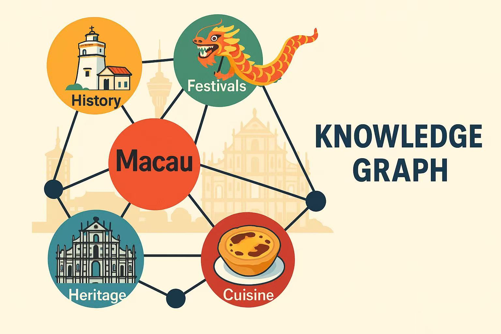

Campus Projects
Macau Cultural Knowledge Graph Project
Timeline: May 2025 - Present

Description: Utilized DeepSeek API and Qwen API to extract entity-relation triplets of Macau culture, building a high-quality knowledge graph. Embedded the graph into Large Language Models to achieve knowledge-based QA reasoning and content recommendation.
Key Contributions:
- Extracted approximately 1.2 million entity-relation triplets in batches using DeepSeek and Qwen APIs, with manual verification of extraction results and entity/relation alignment to ensure data quality.
- Embedded the knowledge graph into LLMs to build a more accurate and detailed Macau-focused conversational AI model.
- Designed and developed a multi-process web crawler to filter and collect about 100,000 Macau-related resources to construct a high-quality text dataset.
Outcomes:
- Related research paper planned for publication in March 2026.
- Supported Macau cultural and tourism departments with data integration, achieving knowledge-based QA reasoning, intelligent tourism content recommendation, and graph visualization queries.
- Built a high-quality text dataset containing 100,000+ Macau-related resources, including Wikipedia pages, official cultural heritage websites, and e-books.
Pet Medical Large Language Model Fine-tuning Project
Timeline: Feb 2025 - May 2025
Description: Fine-tuned the Qwen-7B large language model combined with LORA on over 10,000 pet medical dialogue datasets to build a conversational AI model specifically for pet treatment, and developed a lightweight Web interface.
Key Contributions:
- Fine-tuned the Qwen-7B model with LORA on 10,000+ pet medical dialogues to optimize intent recognition and medical QA capabilities.
- Developed a lightweight Web interface using Flask, optimizing mobile first-screen loading time to ensure a fast-responding user experience.
- Completed the Minimum Viable Product (MVP) and delivered the test version to a partner veterinary hospital for on-site testing.
Outcomes:
- Frontend size optimized to under 200KB, with mobile first-screen loading time reduced to under 1 second.
- Verified the model's usability and practicality in a real clinical environment, laying the foundation for future productization.